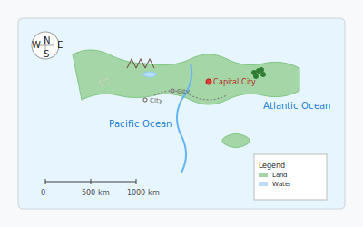

地理学习
在DeepSeek AI的辅助下探索物理和人文地理。了解地球系统、地形、气候、人口和经济地理的概念，在交互式地图上进行地理探索。
探索地理主题
选择一个主题，开始使用AI辅助学习
自然地理
地形、水文和地球科学
人文地理
人口、文化和城市化
气候与天气
气候带、季节和气象现象
环境地理
生态系统、环境挑战和可持续性
经济地理
资源、贸易和全球经济
地图制图学
地图阅读、投影和GIS基础

AI地理助手
获取地理问题和研究的帮助
DeepSeek地理助手
地点信息
获取世界各地的详细信息
地图分析
理解地图数据和空间关系
数据可视化
地理数据的图表和可视化
通过AI测验练习
用DeepSeek AI生成的个性化测验测试您的知识
配置您的测验选项并点击"生成测验"开始练习。
互动地图
探索地理特征和全球地点
图层

选择地图类型并使用搜索栏找到特定位置。
气候探索
了解气候模式和全球天气现象

选择气候类型和区域，然后点击"更新视图"开始探索。